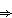
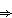
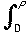
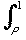
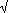
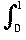

Integrate over [a, b] to get
d1(f, g) =
 |f(x) - g(x)| dx (b - a)d(f, g).
|f(x) - g(x)| dx (b - a)d(f, g).Hence if d(fn, f) is small, so is d1(fn, f) and so if (fn) f in d it also converges in d1 .
 The graphs of fm and fn look like:
The graphs of fm and fn look like:
Hence d1(fm, fn) which is the shaded region is small when m, n are large. Hence (fn) is a Cauchy sequence.
The pointwise limit of this sequence is a function g with g(x) = 0 for x 0 and g(x) = 1 for x > 0.
Although (d1(fn, g) ) 0 as n this function is not in C[-1, 1] and so the sequence does not have a limit in this metric space.
If Y has the discrete metric and X does not then f will not necessarily be continuous.
For example, the identity map from R with the usual metric to R with the discrete metric is not continuous.
 The line y = ax meets y = x2 where ax = x2  x = a at the point P
The line y = ax meets y = x2 where ax = x2  x = a at the point P
Then d1(ax, x2) =  (ax - x2) dx +  (x2 - ax) dx = (eventually) 1/3 a3 - 1/2 a + 1/3 .
Differentiate to find where this has a minimum and get a2 = 2 a = 1/2 (or about 0.707)
 To find the length of the left-hand dark line differentiate d/dx(ax - x2) = 0 a = 2x x = a/2
To find the length of the left-hand dark line differentiate d/dx(ax - x2) = 0 a = 2x x = a/2
So the length at this point is 1/2 a2 - 1/4 a2 = 1/4 a2.
This has to be the same as the length of the right-hand dark line which is 1 - a.
Hence we have 1/4 a2 = 1 - a a = 8 - 2 (or about 0.828)
- To find the length in d2 we have
d2(x2, ax) =  (ax - x2)2 dx = (eventually) 1/3 a2 - 1/2 a + 1/5 which has its minimum (differentiate!) where 2/3 a - 1/2 = 0 a = 3/4 = 0.75